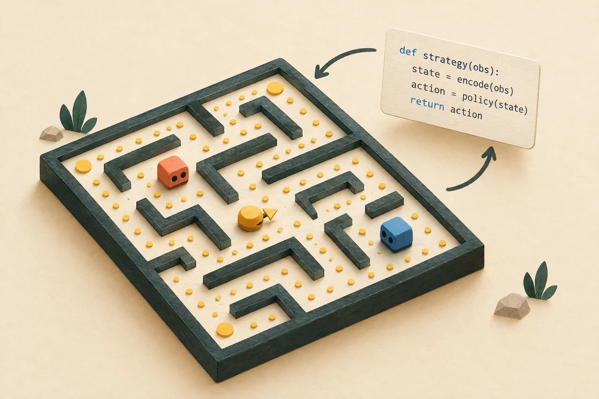
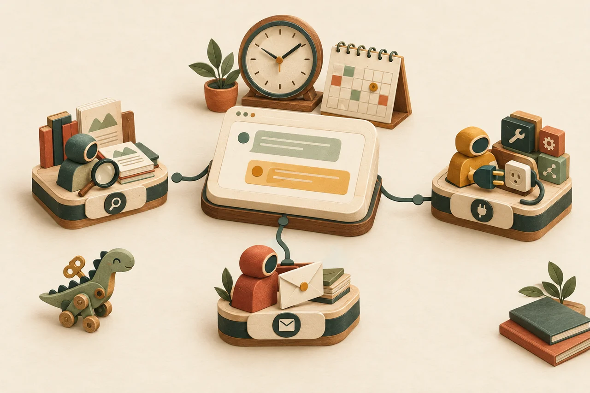

Pac-Man RL
I trained language models to write game-playing strategies for Pac-Man, using OpenEnv and GRPO.
Placed 2nd in the AMD × Unsloth × PyTorch OpenEnv hackathon.
I’m a Senior Solution Engineer for AI & Apps at Microsoft, based in Dublin. I work with customers to take AI ideas beyond the demo and build systems their teams can test, trust, and run.

I trained language models to write game-playing strategies for Pac-Man, using OpenEnv and GRPO.
Placed 2nd in the AMD × Unsloth × PyTorch OpenEnv hackathon.

I built an open-source workspace for creating and coordinating AI agents, with scheduled tasks, MCP tools, and support for different model providers.
The repository includes architecture notes and product screenshots.
View Cronosaurus on GitHub (opens in a new tab)A playground for trying Azure OpenAI text-to-speech: choose a voice, generate audio, export it, and grab code to get started.
Inspired by OpenAI.fm, with Azure-focused examples for developers.
View AzureOpenAI.fm on GitHub (opens in a new tab)I built a LangGraph workflow that first clarifies what a team needs, then finds vendors and turns the results into a structured comparison.
It brings requirements gathering, vendor search, and reporting into one workflow.
View Procurement Discovery on GitHub (opens in a new tab)I use this space to try ideas in fine-tuning, reasoning, and game-playing, then share the models, datasets, and demos.
<move>left</move>A Qwen model picks moves in 2048; GPT-OSS and Llama models write strategies for Pac-Man. All three are trained with GRPO.
A few fine-tuning and reasoning experiments, with model cards and checkpoints.
A Qwen 3 fine-tune exploring medical reasoning.
A 1.5B model trained with GRPO on mathematical reasoning.
A supervised fine-tuning experiment with LFM2.5-1.2B.
Models and experiments related to medical AI.
Datasets for conversation and reasoning experiments.
Reasoning prompts and traces prepared for GRPO experiments.
Instruction-and-response examples in chat format.
Conversations and translation prompts in Hindi, Hinglish, and English.
Small demos built around retrieval and vision; these links go to the source code.
A Phi-3 assistant for asking questions about documents, built with LlamaIndex.
Source for a small demo built around Microsoft's Florence 2 vision model.
A product-image experiment with a fine-tuned Phi-3.5 Vision model.
The hosted demos reported configuration or runtime errors when checked in November 2026; their source remains available.
Snapshot from November 2026. See the latest models on Hugging Face (opens in a new tab)
Milton Keynes → Bangalore → Dubai → Dublin
Built frontend features for internal tools in an agile Formula 1 engineering environment.
Delivered 10+ enterprise BI implementations and built automated reporting pipelines handling more than 5 million records a day.
Designed BI and data platforms, led a team of four consultants, and worked on Azure and AWS data warehouse migrations.
Helped enterprise customers across the UAE and Ireland adopt data and AI solutions. Exceeded quota in FY23 and FY24, working across cloud data platforms, analytics modernisation, and executive AI strategy.
Designed Azure AI solutions, including a chat-with-data RAG proof of concept for a leading investment bank. I also worked on partner enablement; more than 85% of PoCs converted to opportunities.
I help customers design and build agentic AI, document intelligence, and computer vision solutions. The focus is getting beyond the demo: code, evaluation, tracing, and governance.
Azure AI Foundry, Azure OpenAI, agent frameworks, LangGraph, RAG, document intelligence, computer vision, evaluation, and red-teaming.
Azure, GCP, AWS, Synapse, Databricks, Data Factory, SQL, PostgreSQL, Cosmos DB, Power BI, and KQL.
Python, SQL, Java, Node.js, Docker, CI/CD, proof-of-concept delivery, partner enablement, and C-suite to engineering stakeholder work.
I’m interested in roles and conversations around AI engineering, agent systems, and cloud architecture.